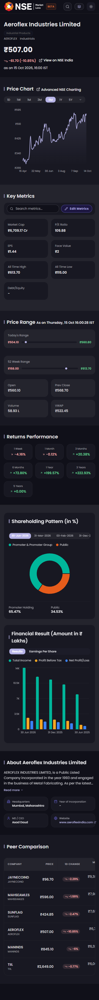
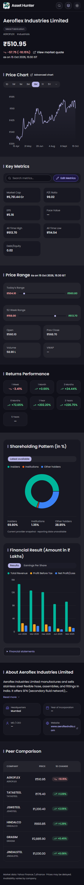
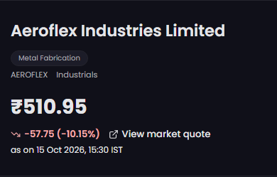
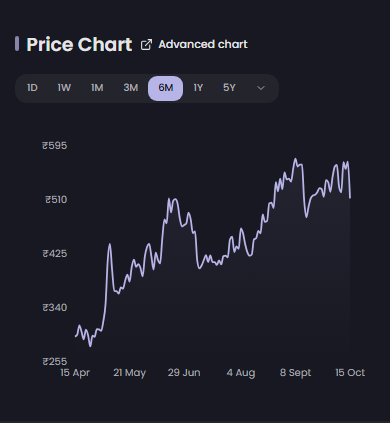
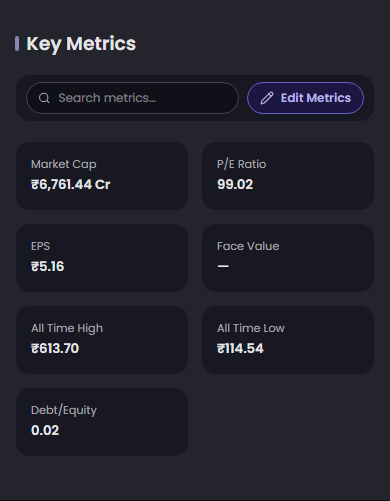
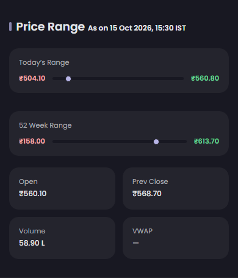
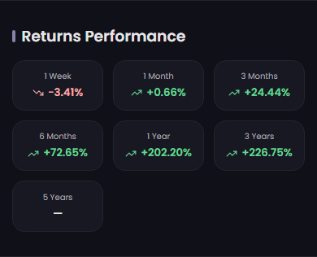
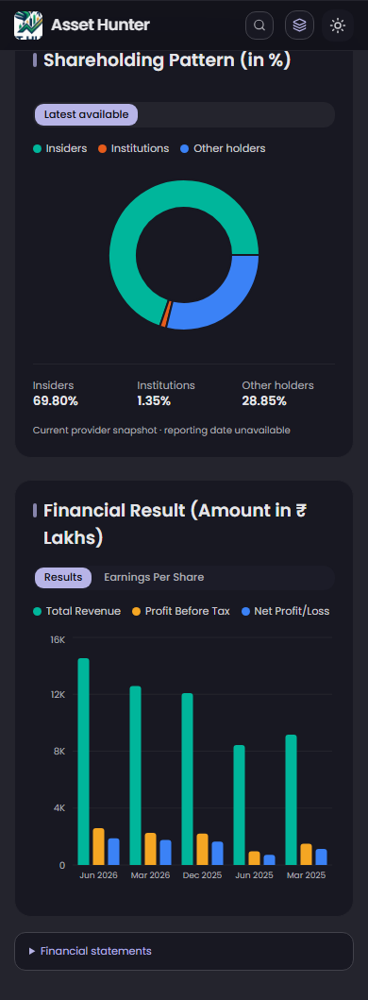
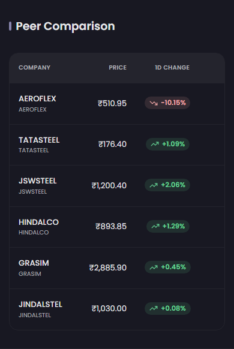

Live AEROFLEX vs AEROFLEX.NS. Brand, provider values, availability, ownership categories and financial-statement extension intentionally differ.


Asset Hunter identity replaces reference branding.
Provider quote, classification and market timestamp differ.

Six-month area chart; actual provider prices and history coverage differ.

Five/two columns with working customization; unavailable face value remains a dash.

Same range indicators; VWAP unavailable from the configured provider.

Seven periods; unavailable listing history remains a dash.

Current ownership snapshot has three categories; reported revenue labels and optional statements are intentional differences.

Provider description and available company facts differ.
Sector comparables come from the existing Asset Hunter universe.
